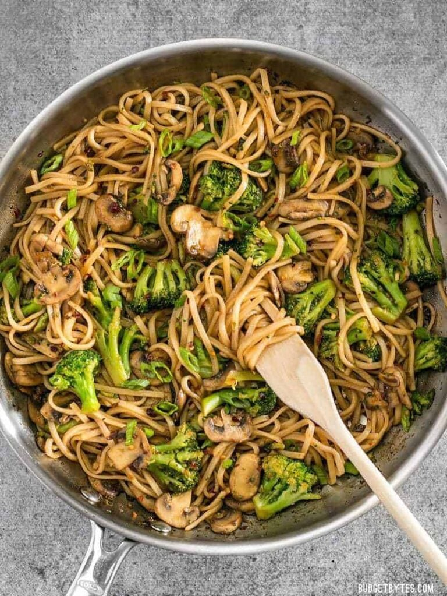

Customization Options for Your Broccoli Stir Fry Noodles
This is basically a vegetarian version of my Stir Fry Beef Noodles, with a little more sesame oil to bring up the base notes in the absence of beef, and a little cornstarch to add body to the sauce. If you’re not into broccoli and mushrooms, you could do a variety of other vegetables in their place, including snow peas, red bell pepper, baby spinach, or carrots.
Ingredients
Stir Fry Sauce
- 1 Tbsp toasted sesame oil>
- 1 Tbsp chili garlic sauce
- 1 Tbsp brown sugar
- 1 Tbsp water
- 1 tsp cornstarch
Stir Fry
- 7 oz wide rice noodles
- 1 Tbsp cooking oil
- 8 oz sliced white mushrooms
- 2 cloves garlic,minced
- 1/2 lb frozen broccoli florets
- 2 green onions,sliced
Instructions
- Prepare the sauce first, so it's ready to go when needed. In a small bowl stir together the soy sauce, toasted sesame oil, chili garlic sauce, brown sugar, water, and cornstarch until the cornstarch is dissolved. Set the sauce aside.
- Cook the noodles according to the package directions, then drain in a colander. The wide rice noodles I used needed to be boiled for about 7-8 minutes
- While the noodles are cooking, heat a large skillet over medium heat. Once hot, add the cooking oil, sliced mushrooms, and minced garlic. Sauté until the mushrooms release all their moisture and begin to brown on the edges.
-
Add the frozen broccoli florets (no need to thaw) and sauté for just a couple minutes more, or until they are no longer frozen but still bright green (they may still be cold, but they will heat through in the next steps. It's important not to over cook the broccoli).
- Finally, add the cooked and drained noodles and the prepared sauce. Stir and cook, still over medium heat, for 1-2 minutes more or until everything is cooked through and the sauce has thickened and no longer pools on the bottom of the skillet. Top with sliced green onions and serve.